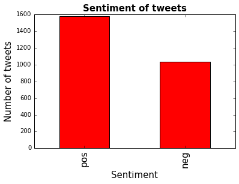

UK election announcement sentiment analysis Supporting tagline
Today there was an announcement that the UK government would be having a snap election. This triggered a lot of heat on Twitter. As someone who lives in the UK, I was interested to see whether I could get some insight into this data, to have an idea at what kind of response the public gave.
Setting up a listener
Firstly we need to get the data from Twitter. I managed to get something set up in Python in a short time using the Twitter Streaming API, saving the code to twitter_streaming.py. The code for this is below.
#Import the necessary methods from tweepy library
from tweepy.streaming import StreamListener
from tweepy import OAuthHandler
from tweepy import Stream
import sys
from ConfigParser import ConfigParser
config = ConfigParser()
config.readfp(open('config.ini', 'r'))
#Variables that contains the user credentials to access Twitter API
access_token = config.get('setup', 'access_token')
access_token_secret = config.get('setup', 'access_token_secret')
consumer_key = config.get('setup', 'consumer_key')
consumer_secret = config.get('setup', 'consumer_secret')
#This is a basic listener that just prints received tweets to stdout.
class StdOutListener(StreamListener):
def on_data(self, data):
print data
return True
def on_error(self, status):
print status
if __name__ == '__main__':
#This handles Twitter authetification and the connection to Twitter Streaming API
l = StdOutListener()
auth = OAuthHandler(consumer_key, consumer_secret)
auth.set_access_token(access_token, access_token_secret)
stream = Stream(auth, l)
keywords = sys.argv[1:]
print keywords
#This line filter Twitter Streams to capture data by the keywords
stream.filter(track=keywords)
The code above is from a really useful blog post An Introduction to Text Mining using Twitter Streaming API and Python. This helped me get started really quickly so I was able to start pulling data shortly after the event happened. I captured around 1.5 hours of data by running this:
python twitter_streaming.py #TheresaMay #generalelection #brexit > brexit.txt
Implementing Naive Bayes
Next thing, I set up a very simple implementation of Naive Bayes sentiment classification, in an attempt to classify the tweets as negative or positive. I used the blog post Training and Testing the Naive Bayes Classifier to help me with this.
I created code in the file sentiment.py as the below.
import json
# NLTK library for sentiment analysis
from nltk.classify import NaiveBayesClassifier
from nltk.corpus import movie_reviews
# source data file and output data file
tweets_data_path = 'brexit.txt'
output_file_path = 'brexit_sentiment.txt'
# function to clean a tweet and return words
def extract_words(text):
text = text.lower()
text = re.sub(r'[^\w#\s]', ' ', text)
return text.split()
# function to extract the word features from a list of words
def word_feats(words):
return dict([(word, True) for word in words])
# training the classifier with the positive and negative
# items in the movie reviews corpus
negids = movie_reviews.fileids('neg')
posids = movie_reviews.fileids('pos')
negfeats = [(word_feats(movie_reviews.words(fileids=[f])), 'neg') for f in negids]
posfeats = [(word_feats(movie_reviews.words(fileids=[f])), 'pos') for f in posids]
trainfeats = negfeats + posfeats
classifier = NaiveBayesClassifier.train(trainfeats)
# one by one get the sentiment of each tweet and save into the output file
with open(tweets_data_path, "r") as tweets_file:
with open(output_file_path, 'w') as output_file:
for line in tweets_file:
try:
tweet = json.loads(line)
tweet_text = tweet['text']
words = extract_words(tweet['text'])
sentiment = classifier.classify(word_feats(words))
data = {
'tweet': tweet,
'sentiment': sentiment
}
json.dump(data, output_file)
output_file.write('\n')
except:
continue
Now we have a JSON file with ‘sentiment’ containing either ‘neg’ or ‘pos’, and ‘tweet’ containing all the data of the tweet.
Analysis
Lastly, I did some very simple analyis of the data that was saved. I created a new file for this in sentiment_analysis.py, based on the previously mentioned blog post An Introduction to Text Mining using Twitter Streaming API and Python.
I took a 5% sample of the data and ran some counts of this, plotting them.
import json
import pandas as pd
import matplotlib.pyplot as plt
%matplotlib inline
import random
from pandas.io.json import json_normalize
tweets_data_path = 'brexit_sentiment.txt'
tweets_data = []
i = 0
with open(tweets_data_path, "r") as tweets_file:
for line in tweets_file:
i += 1
try:
if i % 20 == 0:
tweet = json.loads(line)
tweets_data.append(tweet)
except:
continue
tweets = json_normalize(tweets_data)
tweets_by_sentiment = tweets['sentiment'].value_counts()
fig, ax = plt.subplots()
ax.tick_params(axis='x', labelsize=15)
ax.tick_params(axis='y', labelsize=10)
ax.set_xlabel('Sentiment', fontsize=15)
ax.set_ylabel('Number of tweets' , fontsize=15)
ax.set_title('Sentiment of tweets', fontsize=15, fontweight='bold')
tweets_by_sentiment.plot(ax=ax, kind='bar', color='red')
<matplotlib.axes._subplots.AxesSubplot at 0xbe326f0>

blog comments powered by Disqus